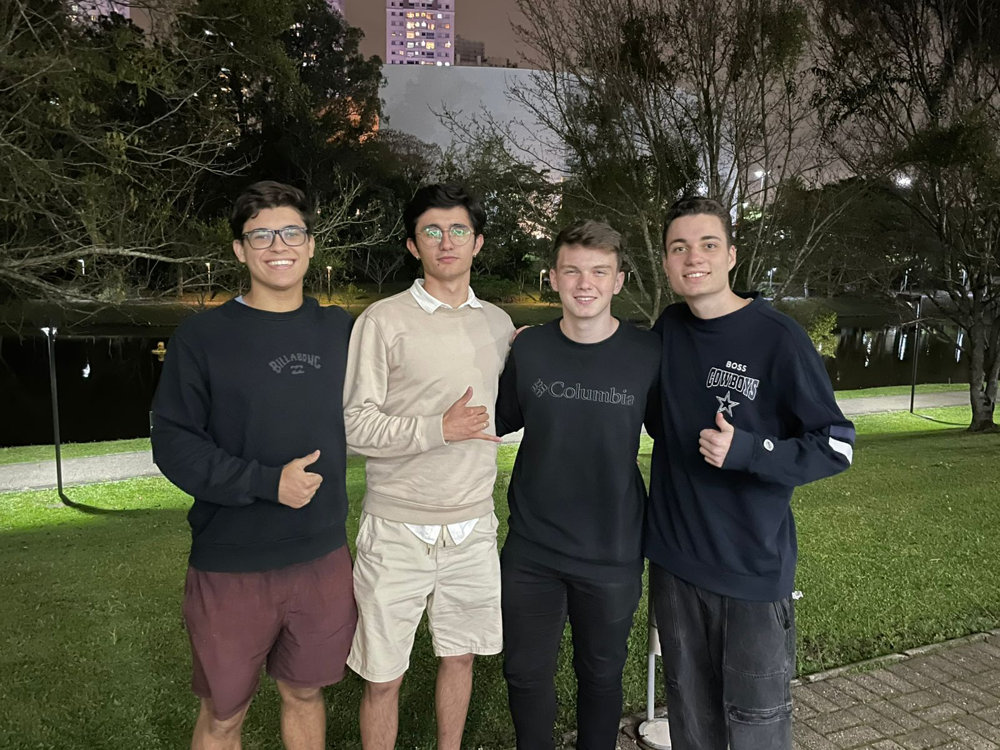

Ruann Gomes Walter
Por que Engenharia de Software?
Eu confesso que estudar Engenharia de Software não estava nos meus planos, mas acabou acontecendo. Em 2022, quando terminei o ensino médio, eu estava completamente perdido. Não fazia ideia do que estudar nem de qual carreira seguir. Sempre fui muito ligado à tecnologia, gostava de desenhar e pensei: "Por que não cursar design gráfico?" Fiz minha matrícula na Universidade Positivo para cursar design gráfico a distância, mas, felizmente, não deu certo. Não me identifiquei com o curso e resolvi migrar para a área de programação. E posso dizer com certeza que foi a melhor decisão que tomei!
Desenvolvimento Web
Hoje, meu foco é no desenvolvimento web, com conhecimentos em HTML5, CSS3, C e estudando JavaScript. Apesar de ainda estar no começo da minha carreira como programador, tenho muita vontade e determinação para aprender e crescer profissionalmente. Estou sempre em busca de novos desafios e quero construir uma trajetória sólida na área de front-end.
Além da tecnologia, a música também é uma grande parte da minha vida. Sou apaixonado por rock, especialmente por Black Sabbath, banda que, inclusive, tenho tatuada. Também toco guitarra, jogo futebol e me inspiro em outras bandas como cbjr. Meu gosto por design e estética se reflete na minha forma de pensar em interfaces, buscando sempre unir funcionalidade e estilo nos meus projetos. Estou determinado a me desenvolver cada vez mais como programador, unindo minhas paixões por tecnologia, música e design para criar uma identidade única no meu portfólio e na carreira que estou construindo.
Comunicação
A comunicação é essencial na minha vida, tanto pessoal quanto profissionalmente. Acredito que a habilidade de se expressar de forma clara e eficaz é fundamental para construir relacionamentos significativos e colaborar com os outros. Quando me comunico bem, consigo transmitir minhas ideias e sentimentos, além de compreender melhor os pontos de vista das pessoas ao meu redor. Na área da Engenharia de Software, a comunicação desempenha um papel crucial. Trabalhar em equipe requer que todos estejam alinhados e compreendam as expectativas e objetivos do projeto. Um bom diálogo facilita a troca de feedbacks, a resolução de problemas e a implementação de soluções criativas.
Além disso, a comunicação me ajuda a transmitir minha paixão por tecnologia e música, permitindo que eu compartilhe experiências e conheça pessoas com interesses semelhantes. Conversar sobre esses temas me inspira e me motiva, e eu valorizo muito as conexões que faço através das palavras. Em resumo, a comunicação é uma ferramenta poderosa na minha vida. Ela não apenas me ajuda a crescer como profissional, mas também enriquece minhas interações sociais, tornando-as mais significativas e gratificantes.
Rock e Charlie Brown Junior!
O rock é uma influência poderosa na minha vida, moldando não apenas meu gosto musical, mas também minha perspectiva sobre o mundo. As letras profundas e as melodias intensas me inspiram a refletir sobre minhas experiências e emoções, e a energia que as músicas transmitem me motiva a enfrentar desafios. Uma das bandas que mais amo é o Charlie Brown Jr. Eles têm uma habilidade única de misturar rock com elementos de reggae e rap, criando um som que ressoa profundamente comigo. As letras de Chorão falam sobre amor, amizade, superação e as lutas da vida, temas que me tocam diretamente. Suas músicas me ajudam a lidar com os altos e baixos da vida e me fazem sentir que não estou sozinho em minhas experiências.

Cada canção do Charlie Brown Jr. carrega uma carga emocional que me conecta a momentos especiais da minha vida. Eu amo como eles conseguem capturar a essência do cotidiano e transformar isso em arte. Suas músicas são um verdadeiro hino de autenticidade, e sempre que as ouço, sinto uma onda de nostalgia e inspiração. O rock, através do Charlie Brown Jr., me ensina a valorizar a vida e a expressar quem eu realmente sou.